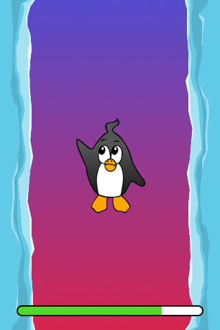
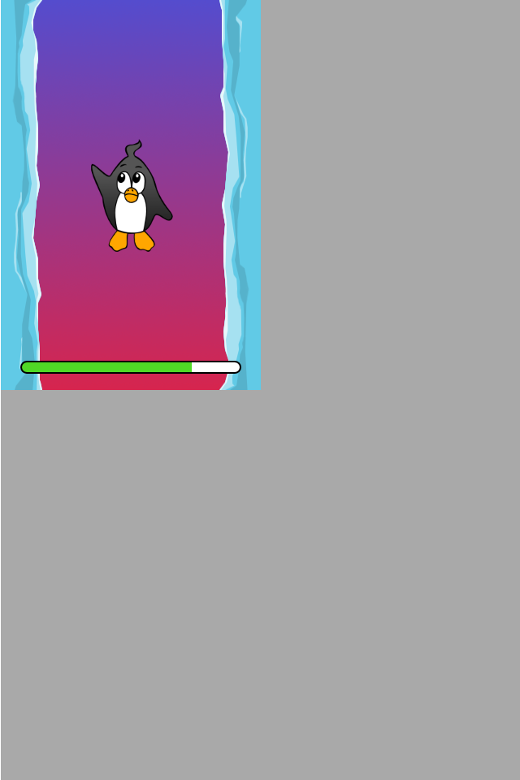
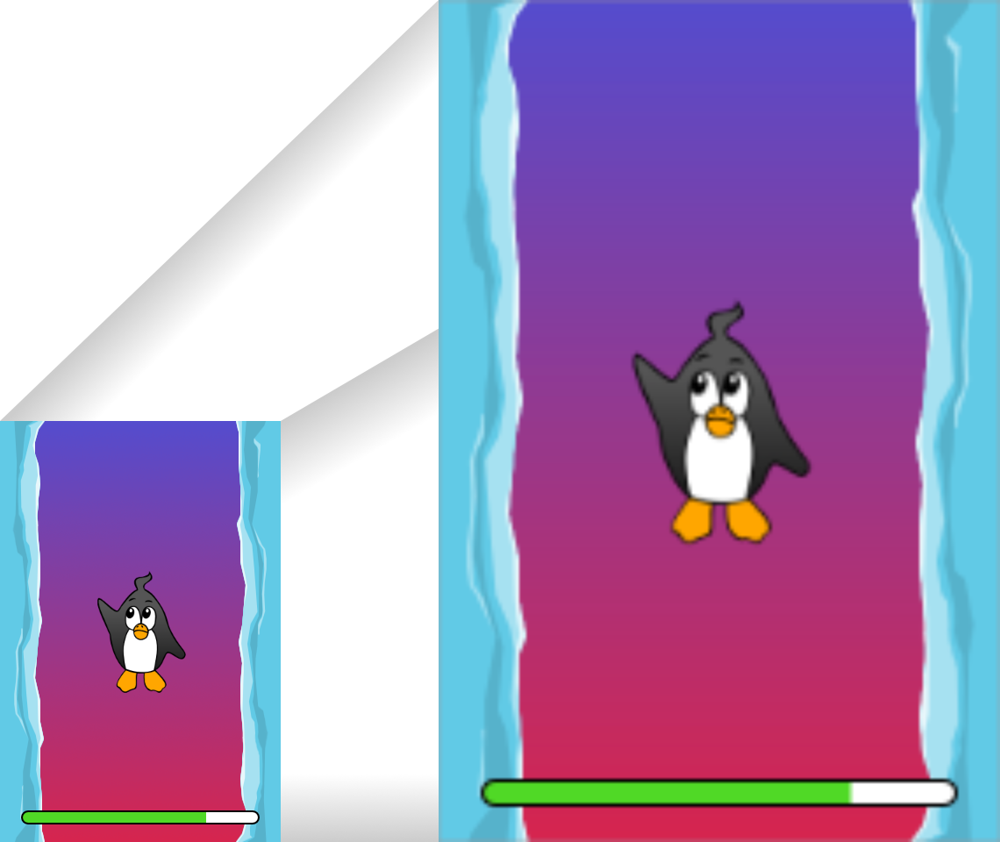
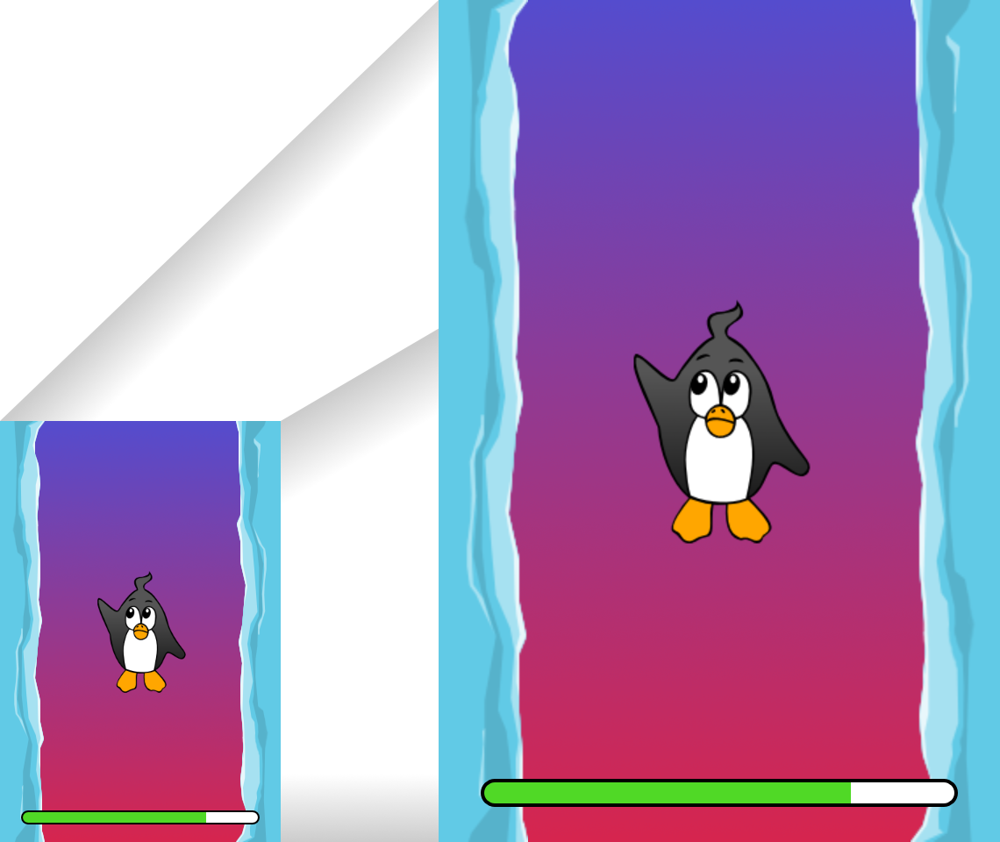
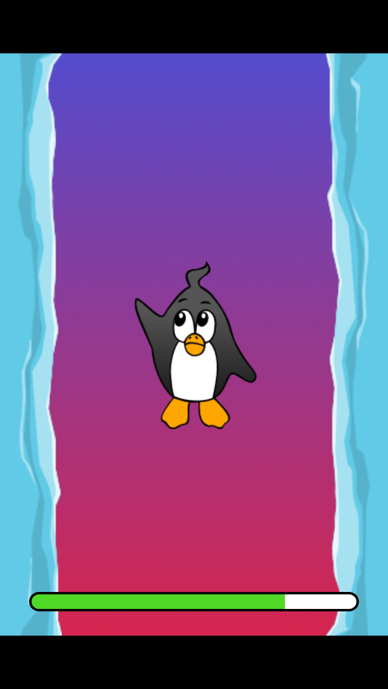
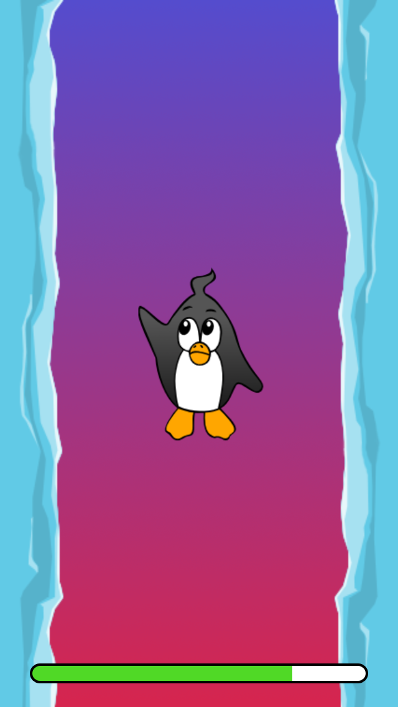

var screenWidth:Int = stage.fullScreenWidth;
var screenHeight:Int = stage.fullScreenHeight;
var viewPort:Rectangle = new Rectangle(0, 0, screenWidth, screenHeight);
starling = new Starling(Game, stage, viewPort);Multi-Resolution Development
Oh, where are the days we developed games for a single screen? Back then, we had a small rectangular area in an HTML page, and that’s where we placed our sprites, texts and images. A single resolution to work for — wasn’t that nice?
Alas — the times they are a-changin'! Mobile phones come in all flavors and sizes, and even desktop computers and notebooks feature high density displays. This is great news for our consumer-selves, but it doesn’t exactly make our lives as developers easier, that’s for sure!
But don’t give up hope: you can manage that. It’s just a matter of thinking ahead and making use of a few simple mechanisms provided by Starling.
The problem is just that it’s a little overwhelming at first. That’s why we’ll do this in small steps — and we will begin in 2007.
Yes, you heard right: step into the DeLorean, start up the Flux Capacitor™ and hold tight while we hit those eighty miles per hour.
iPhone
The iPhone is arguably the most popular platform for casual games. Back in 2007, it was also the only one you could easily develop for. This was the time of the big App Store gold rush!
With its fixed resolution of 320×480 pixels, the first iPhone was super easy to develop for. Granted, Starling wasn’t around back then, but you would have started it up like this:
We set the viewPort to the full size of the screen: 320×480 pixels. Per default, the stage will have exactly the same dimensions.

Figure 1. Our game on the original iPhone.
So far, so easy: this works just like in, say, a game for the browser. (That would be Internet Explorer 6, then, right?)
Next stop: 2010.
iPhone Retina
We park our DeLorean right around the corner of the old Apple campus and check out the App Store charts. Hurray! Apparently, our game was a huge success in 2007, and it’s still in the top 10! There’s no time to lose: we must make sure it looks well on the iPhone 4 that’s going to come out in a few weeks.
Since we’re coming from the future, we know about its major innovation, the high-resolution screen dubbed "Retina Display" by the Apple marketing team. To support this resolution in OpenFL, we need to activate the following setting in the Lime project.xml configuration file:
<window allow-high-dpi="true"/>With that out of the way, we fire up our game from 2007 and start it up on this yet-to-be released device.

Figure 2. That’s definitely not intended.
Damn, the game is now only taking up a quarter of the screen! Why is that?
If you look back at the code we wrote in 2007, you’ll see that we made the viewPort just as big as the screen.
With the iPhone 4, these values have doubled: its screen has 640×960 pixels.
The code that placed display objects on the stage expected a coordinate system of just 320×480, though.
So things that were placed on the very right (x=320) are now suddenly at the center instead.
That’s easily solved, though.
Remember: Starling’s viewPort and stageWidth/Height properties can be set independently.
-
The viewPort decides into which area of the screen Starling renders into. It is always specified in pixels.
-
The stage size decides the size of the coordinate system that is displayed in that viewPort. When your stage width is 320, any object with an x-coordinate between 0 and 320 will be within the stage, no matter the size of the viewPort.
With that knowledge, upscaling is trivial:
var screenWidth:Int = stage.fullScreenWidth;
var screenHeight:Int = stage.fullScreenHeight;
var viewPort:Rectangle = new Rectangle(0, 0, screenWidth, screenHeight);
starling = new Starling(Game, stage, viewPort);
starling.stage.stageWidth = 320;
starling.stage.stageHeight = 480;The viewPort is still dynamic, depending on the device the game is started on; but we added two lines at the bottom that hard-code the stage size to fixed values.
| Since those values no longer indicate pixels, we are now calling them points: our stage size is now 320×480 points. |
On the iPhone 4, the game now looks like this:

Figure 3. Better, but a little blurry.
That’s better: we are now using the full screen size. However, it’s also a little blurry. We’re not really making any use of the big screen. I can already see the bad reviews coming in … we need to fix this!
HD textures
The solution for that problem is to provide special textures for the high resolution. Depending on the pixel density, we will use either the low- or high-resolution texture set. The advantage: except for the logic that picks the textures, we don’t need to change any of our code.
It’s not enough to simply load a different set of files, though. After all, bigger textures will return bigger values for width and height. With our fixed stage width of 320 points,
-
an SD texture with a width of 160 pixels will fill half of the stage;
-
a corresponding HD texture (width: 320 pixels) would fill the complete stage.
What we want instead is for the HD texture to report the same size as the SD texture, but provide more detail.
That’s where Starling’s contentScaleFactor comes in handy. We implicitly set it up when we configured Starling’s stage and viewPort sizes. With the setup shown above, run the following code on an iPhone 4:
trace(starling.contentScaleFactor); // → 2The contentScaleFactor returns the viewPort width divided by the stage width. On a retina device, it will be "2"; on a non-retina device, it will be "1". This tells us which textures to load at runtime.
| It’s not a coincidence that the contentScaleFactor is a whole number. Apple exactly doubled the number of pixels per row / per column to avoid aliasing issues as much as possible. |
The texture class has a similar property simply called scale.
When set up correctly, the texture will work just like we want it to.
var scale:Float = starling.contentScaleFactor; (1)
var texturePath:String = "textures/" + scale + "x"; (2)
var appDir:File = File.applicationDirectory;
assetManager.textureOptions.scale = scale; (3)
assetManager.enqueue(appDir.resolvePath(texturePath));
assetManager.loadQueue(/* ... */);
var texture:Texture = assetManager.getTexture("penguin"); (4)
trace(texture.scale); // → Either '1' or '2' (5)| 1 | Get the contentScaleFactor from the Starling instance. |
| 2 | Depending on the scale factor, the textures will be loaded from the directory 1x or 2x. |
| 3 | By assigning the same scale factor to the AssetManager, all textures will be initialized with that value. |
| 4 | When accessing the textures, you don’t need to take care about the scale factor. |
| 5 | However, you can find out the scale of a texture anytime via the scale property. |
Not using the AssetManager?
Don’t worry: all the Texture.from… methods contain an extra argument for the scale factor.
It must be configured right when you create the texture; the value can’t be changed later.
|
The textures will now take the scale factor into account when you query their width or height. For example, here’s what will happen with the game’s full-screen background texture.
| File | Size in Pixels | Scale Factor | Size in Points |
|---|---|---|---|
textures/1x/bg.jpg |
320×480 |
1.0 |
320×480 |
textures/2x/bg.jpg |
640×960 |
2.0 |
320×480 |
Now we have all the tools we need!
-
Our graphic designer on the back seat (call him Biff) creates all textures in a high resolution (ideally, as vector graphics).
-
In a preprocessing step, the textures are converted into the actual resolutions we want to support (
1x,2x). -
At runtime, we check Starling’s contentScaleFactor and load the textures accordingly.
This is it: now we’ve got a crisp-looking retina game! Our player’s will appreciate it, I’m sure of that.

Figure 4. Now we’re making use of the retina screen!
| Tools like TexturePacker make this process really easy. Feed them with all your individual textures (in the highest resolution) and let them create multiple texture atlases, one for each scale factor. |
We celebrate our success at a bar in Redwood, drink a beer or two, and move on.
iPhone 5
In 2012, the iPhone has another surprise in store for us: Apple changed the screen’s aspect ratio. Horizontally, it’s still 640 pixels wide; but vertically, it’s now a little bit longer (1136 pixels). It’s still a retina display, of course, so our new logical resolution is 320×568 points.
As a quick fix, we simply center our stage on the viewPort and live with the black bars at the top and bottom.
var offsetY:Int = Std.int((1136 - 960) / 2);
var viewPort:Rectangle = new Rectangle(0, offsetY, 640, 960);Mhm, that seems to work! It’s even a fair strategy for all those Android smartphones that are beginning to pop up in this time line. Yes, our game might look a little blurry on some devices, but it’s not too bad: the image quality is still surprisingly good. Most users won’t notice.

Figure 5. Letterbox scaling.
I call this the Letterbox Strategy.
-
Develop your game with a fixed stage size (like 320×480 points).
-
Add several sets of assets, depending on the scale factor (e.g.
1x,2x,3x). -
Then you scale up the application so that it fills the screen without any distortion.
This is probably the most pragmatic solution. It allows your game to run in an acceptable quality on all available display resolutions, and you don’t have to do any extra work other than setting the viewPort to the right size.
By the way, the latter is very easy when you use the RectangleUtil that comes with Starling. To "zoom" your viewPort up, just create it with the following code:
final stageWidth:Int = 320; // points
final stageHeight:Int = 480;
final screenWidth:Int = stage.fullScreenWidth; // pixels
final screenHeight:Int = stage.fullScreenHeight;
var viewPort:Rectangle = RectangleUtil.fit(
new Rectangle(0, 0, stageWidth, stageHeight),
new Rectangle(0, 0, screenWidth, screenHeight),
ScaleMode.SHOW_ALL);Simple, yet effective! We definitely earned ourselves another trip with the time machine. Hop in!
iPhone 6 and Android
We’re in 2014 now and … Great Scott! Checking out the "App Store Almanac", we find out that our sales haven’t been great after our last update. Apparently, Apple wasn’t too happy with our letterbox-approach and didn’t feature us this time. Damn.
Well, I guess we have no other choice now: let’s bite the bullet and make use of that additional screen space. So long, hard-coded coordinates! From now on, we need to use relative positions for all our display objects.
I will call this strategy Smart Object Placement. The startup-code is still quite similar:
var viewPort:Rectangle = new Rectangle(0, 0, screenWidth, screenHeight);
starling = new Starling(Game, stage, viewPort);
starling.stage.stageWidth = 320;
starling.stage.stageHeight = isIPhone5() ? 568 : 480;Yeah, I smell it too. Hard coding the stage height depending on the device we’re running … that’s not a very smart idea. Promised, we’re going to fix that soon.
For now, it works, though: both viewPort and stage have the right size. But how do we make use of that? Let’s look at the Game class now, the class acting as our Starling root.
class Game extends Sprite
{
public function new()
{
super();
addEventListener(Event.ADDED_TO_STAGE, onAddedToStage); (1)
}
private function onAddedToStage():Void
{
setup(stage.stageWidth, stage.stageHeight); (2)
}
private function setup(width:Float, height:Float):Void
{
// ...
var lifeBar:LifeBar = new LifeBar(width); (3)
lifeBar.y = height - lifeBar.height;
addChild(lifeBar);
// ...
}
}| 1 | When the constructor of game is called, it’s not yet connected to the stage. So we postpone initialization until we are. |
| 2 | We call our custom setup method and pass the stage size along. |
| 3 | Exemplary, we create a LifeBar instance (a custom user interface class) at the bottom of the screen. |
All in all, that wasn’t too hard, right? The trick is to always take the stage size into account. Here, it pays off if you created your game in clean components, with separate classes responsible for different interface elements. For any element where it makes sense, you pass the size along (like in the LifeBar constructor above) and let it act accordingly.

Figure 6. No more letterbox bars: the complete screen is put to use.
That works really well on the iPhone 5. We should have done that in 2012, dammit! Here, in 2014, things have become even more complicated.
-
Android is quickly gaining market share, with phones in all different sizes and resolutions.
-
Even Apple introduced bigger screens with the iPhone 6 and iPhone 6 Plus.
-
Did I mention tablet computers?
By organizing our display objects relative to the stage dimensions, we already laid the foundations to solve this. Our game will run with almost any stage size.
The remaining problem is which values to use for stage size and content scale factor. Looking at the range of screens we have to deal with, this seems like a daunting task!
| Device | Screen Size | Screen Density | Resolution |
|---|---|---|---|
iPhone 3 |
3,50" |
163 dpi |
320×480 |
iPhone 4 |
3,50" |
326 dpi |
640×960 |
iPhone 5 |
4,00" |
326 dpi |
640×1136 |
iPhone 6 |
4,70" |
326 dpi |
750×1334 |
iPhone 6 Plus |
5,50" |
401 dpi |
1080×1920 |
Galaxy S1 |
4,00" |
233 dpi |
480×800 |
Galaxy S3 |
4,80" |
306 dpi |
720×1280 |
Galaxy S5 |
5,10" |
432 dpi |
1080×1920 |
Galaxy S7 |
5,10" |
577 dpi |
1440×2560 |
The key to figuring out the scale factor is to take the screen’s density into account.
-
The higher the density, the higher the scale factor. In other words: we can infer the scale factor from the density.
-
From the scale factor, we can calculate the appropriate stage size. Basically, we reverse our previous approach.
The original iPhone had a screen density of about 160 dpi. We take that as the basis for our calculations: for any device, we divide the density by 160 and round the result to the next integer. Let’s make a sanity check of that approach.
| Device | Screen Size | Screen Density | Scale Factor | Stage Size |
|---|---|---|---|---|
iPhone 3 |
3,50" |
163 dpi |
1.0 |
320×480 |
iPhone 4 |
3,50" |
326 dpi |
2.0 |
320×480 |
iPhone 5 |
4,00" |
326 dpi |
2.0 |
320×568 |
iPhone 6 |
4,70" |
326 dpi |
2.0 |
375×667 |
iPhone 6 Plus |
5,50" |
401 dpi |
3.0 |
414×736 |
Galaxy S1 |
4,00" |
233 dpi |
1.5 |
320×533 |
Galaxy S3 |
4,80" |
306 dpi |
2.0 |
360×640 |
Galaxy S5 |
5,10" |
432 dpi |
3.0 |
360×640 |
Galaxy S7 |
5,10" |
577 dpi |
4.0 |
360×640 |
Look at the resulting stage sizes: they are now ranging from 320×480 to 414×736 points. That’s a moderate range, and it also makes sense: a screen that’s physically bigger is supposed to have a bigger stage. The important thing is that, by choosing appropriate scale factors, we ended up with reasonable coordinate systems. This is a range we can definitely work with!
| You might have noticed that the scale factor of the Galaxy S1 is not an integer value. This was necessary to end up with an acceptable stage size. |
Let’s see how I came up with those scale values.
Create a class called ScreenSetup and start with the following contents:
class ScreenSetup
{
private var _stageWidth:Float;
private var _stageHeight:Float;
private var _viewPort:Rectangle;
private var _scale:Float;
private var _assetScale:Float;
public function new(
fullScreenWidth:UInt, fullScreenHeight:UInt,
assetScales:Array<Float>=null, screenDPI:Float=-1)
{
// ...
}
public var stageWidth(get, never):Float;
private function get_stageWidth():Float { return _stageWidth; }
public var stageHeight(get, never):Float;
private function get_stageHeight():Float { return _stageHeight; }
public var viewPort(get, never):Rectangle;
private function get_viewPort():Rectangle { return _viewPort; }
public var scale(get, never):Float;
private function get_scale():Float { return _scale; }
public var assetScale(get, never):Float;
private function get_assetScale():Float { return _assetScale; }
}This class is going to figure out the viewPort and stage size Starling should be configured with.
Most properties should be self-explanatory — except for the assetScale, maybe.
The table above shows that we’re going to end up with scale factors ranging from "1" to "4". However, we probably don’t want to create our textures in all those sizes. The pixels of the densest screens are so small that your eyes can’t possibly differentiate them, anyway. Thus, you’ll often get away with just providing assets for a subset of those scale factors (say, 1-2 or 1-3).
-
The
assetScalesargument in the constructor is supposed to be an array filled with the scale factors for which you created textures. -
The
assetScaleproperty will tell you which of those asset-sets you need to load.
| Nowadays, it’s even rare for an application to require scale factor "1". However, that size comes in handy during development, because you can preview your interface without requiring an extremely big computer screen. |
Let’s get to the implementation of that constructor, then.
public function new(
fullScreenWidth:UInt, fullScreenHeight:UInt,
assetScales:Array<Float>=null, screenDPI:Float=-1)
{
if (screenDPI <= 0) screenDPI = Capabilities.screenDPI;
if (assetScales == null || assetScales.length == 0) assetScales = [1];
var iPad:Bool = Capabilities.os.indexOf("iPad") != -1; (1)
var baseDPI:Float = iPad ? 130 : 160; (2)
var exactScale:Float = screenDPI / baseDPI;
if (exactScale < 1.25) _scale = 1.0; (3)
else if (exactScale < 1.75) _scale = 1.5;
else _scale = Math.round(exactScale);
// sort descending
assetScales.sort(function(a:Float, b:Float):Int
{
return Std.int(b - a);
});
_assetScale = assetScales[0];
for (i in 0...assetScales.length) (4)
{
if (assetScales[i] >= _scale) _assetScale = assetScales[i];
}
_stageWidth = Std.int(fullScreenWidth / _scale); (5)
_stageHeight = Std.int(fullScreenHeight / _scale);
_viewPort = new Rectangle(0, 0, _stageWidth * _scale, _stageHeight * _scale);
}| 1 | We need to add a small workaround for the Apple iPad. We want it to use the same set of scale factors you get natively on iOS. |
| 2 | Our base density is 160 dpi (or 130 dpi on iPads). A device with such a density will use scale factor "1". |
| 3 | Our scale factors should be integer values or 1.5. This code picks the closest one. |
| 4 | Here, we decide the set of assets that should be loaded. |
| 5 | The stage size depends on the scale factor we just created. |
| If you want to see the results of this code if run on the devices I used in the tables above, please refer to this Gist. You can easily add some more devices to this list and check out if you are pleased with the results. |
Now that everything is in place, we can adapt the startup-code of Starling. This code presumes that you are providing assets with the scale factors "1" and "2".
var screen:ScreenSetup = new ScreenSetup(
stage.fullScreenWidth, stage.fullScreenHeight, [1, 2]);
_starling = new Starling(Root, stage, screen.viewPort);
_starling.stage.stageWidth = screen.stageWidth;
_starling.stage.stageHeight = screen.stageHeight;When loading the assets, make use of the assetScale property.
var scale:Float = screen.assetScale;
var texturePath:String = "textures/" + scale + "x";
var appDir:File = File.applicationDirectory;
assetManager.textureOptions.scale = scale;
assetManager.enqueue(appDir.resolvePath(texturePath));
assetManager.loadQueue(/* ... */);That’s it! You still have to make sure to set up your user interface with the stage size in mind, but that’s definitely manageable.
| The Starling repository contains a project called Mobile Scaffold that contains all this code. It’s the perfect starting point for any mobile application. (If you can’t find the ScreenSetup class in your download yet, please have a look at the head revision of the GitHub project.) |
| If you are using Feathers, the class ScreenDensityScaleFactorManager will do the job of the ScreenSetup class we wrote above. In fact, the logic that’s described here was heavily inspired by that class. |
iPad and other Tablets
Back in the present, we’re starting to wonder if it would make sense to port our game to tablets. The code from above will work just fine on a tablet; however, we will be facing a much larger stage, with much more room for content. How to handle that depends on the application you are creating.
Some games can simply be scaled up.
Games like Super Mario Bros or Bejeweled look great scaled to a big screen with detailed textures. In that case, you could ignore the screen density and calculate the scale factor based just on the amount of available pixels.
-
The first iPad (resolution: 768×1024) would simply become a device with a stage size of 384×512 and a scale factor of "2".
-
A retina iPad (resolution: 1536×2048) would also have a stage size of 384×512, but a scale factor of "4".
Others can display more content.
Think of Sim City or Command & Conquer: such games could show the user much more of the landscape. The user interface elements would take up less space compared to the game’s content.
Some will need you to rethink the complete interface.
This is especially true for productivity-apps. On the small screen of a mobile phone, an email client will show either a single mail, the inbox, or your mailboxes. A tablet, on the other hand, can display all three of those elements at once. Don’t underestimate the development effort this will cause.